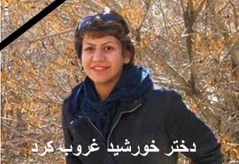

|
|

"چهل روز بی بهاره"،"چهل روز با بهاره"
يكشنبه15 خرداد 1390
چهل روز گذشت...
برای بهاره علوی
کاوه کرمانشاهی

تغییر برای برابری - نشستیم و ساعتها در آن کافهی زیرزمینی با هم حرف زدیم. از جبر ماندن و اختیار رفتن گفتیم. قرار بود من نباشم. یا آن سوی میلهها، یا این سوی مرزها. گفتیم و گفتیم... به قد تمام سالهای کوتاه دوستیمان، به قد تمام سالهای طولانی دوریمان. موقع حرف زدن بغض داشتم. دستم را محکم گرفت. یعنی مقاوم باش. موقع خداحافظی اشک ریختم. شانههایم را محکم گرفت. یعنی مقاوم باش.
تند و تند حرف میزدم. انگار فرصت دیگری نبود. باید میگفتم هر آنچه در دل داشتم. خودش هم میدانست در ابراز کلامی احساساتم به دیگران چقدر ضعیفم. هیچ وقت نتوانستم به خانواده و دوستانم بگویم چقدر دوستشان دارم. چقدر به تک تکشان وابستهام. چقدر به مهربانیشان نیاز دارم.
اما این بار در چشمانش ذل زدم و گفتم. گفتم که به عنوان یک دوست چقدر دوستش دارم. گفتم که به عنوان یک فمینیست چقدر افکارش را میستایم. گفتم که به عنوان یک اکتیویست چقدر به او احترام میگذارم. از حسادتم به شجاعتش در شکستن تابوها گفتم. گفتم و گفتم... گفتم ببخشم برای همهی کمیها و بدیهایی که در رفاقت با تو داشتم. آنقدر گفتم تا سبک شدم. انگار هیچ ناگفتهایی باقی نمانده بود. حتی برای اولین بار به او فهماندم چیزی را که دوست نداشتم دیگران بفهمند!
شب نوروز بود. 5 روز پیش حکمم تایید شده بود و تصمیمم را گرفته بودم. در تاریکی شب رفتم در خانهشان تا بگویم از بین دو رفتن کدام را انتخاب کردم. نبودند اما. همسایه گفت رفتهاند سقز. در آن شلوغی آتش بازی و ههلپهرکی (رقص کُردی) جشن نوروز جایی را پیدا کردم تا قبل از حرکت ایمیلم را چک کنم. روی وال فیسبوکم نوشته بود: امروز رفته بودم کوه، خیلی یاد اون کوهنوردی خودمان و تاقبستان و سقوط آزادهای خودم! افتادم. الان آمدم و این خبر رو دیدم. واقعا نمیدانم چه بگم عزیزم. فقط اینکه هر تصمیمی بگیری ما همه پشتیبانت هستیم. تو سلامت باش، دوری به جهنم...
از مرز گذشتم. برایش ایمیل دادم. گفتم شب نوروز آمدم نبودی. عیدیت را دادم دست یکی از دوستانمان. گفتم: پیامت را در فیس بوک دیدم. نمیدانی در آن لحظههای تصمیم و تردید چقدر احتیاج داشتم به شنیدن چنین سخنی از یک دوست: هر تصمیمی بگیری ما همه پشتیبانت هستیم.
تماس گرفت. گفت قبل از اینکه باز بروی، میآیم و میبینمت. خوشحال شدم. نگران شدم. از اینکه دوباره میبینمش، اما نکند مشکلی برایش پیش بیاید. نیامد اما. خبر رسید که تصادف کردهاند. پدرش فوت کرده بود. خودش و مادرش هم مجروح شده بودند. به او اما نگفته بودند که پدرت مرده است. فقط پدرش نبود. دوستش هم بود. همیشه غبطه میخوردم به این رابطهی پدر و فرزندی. از چیزهایی با هم حرف میزدند که گفتنش بین دو دوست هم نمیتوانست خیلی راحت باشد.
تماس گرفتم. کوتاه حرف زدیم. مثل همیشه روحیهاش خوب بود. حال مادرش را پرسیدم، اما چیزی از حال پدر نگفتم! خودش گفت خوبم. بقیه هم گفتند خوب میشود اما کمی طول میکشد. چند روز بعد خبر دادند که کف پاهایش مور مور میکند. از خوشحالی انگار آن مور مور را در تمام وجودم احساس کردم.
چهل روز پیش. نشستهام در کافهایی که این روزها شده پاتق قرارهای تنهاییم. تا آنلاین میشوم از دوست مشترکمان حالش را میپرسم. میگوید همین الان با هم حرف زدیم، او هم سراغ تو را میگرفت. چرا خودت زنگ نمیزنی؟! بعد از اینکه خبر مرگ پدرش را فهمیده بود و اینکه خودش هم باید برای مدت زیادی روی ویلچر بنشید، برایم سخت بود که بخواهم در یک تماس تلفنی و با دو جملهی کلیشهایی، تسلیت بگویم و تسکینش دهم.
تلفن در دستم میلرزد. صدایم را محکم میکنم. میگویم پدرت مرد بزرگی بود و خودت هم دختر قویی هستی. میگویم میدانم درد بزرگیست از دست دادن آن پدر و تحمل این وضعیت. اما لطفاً مقاوم باش. به کمکم میآید. صحبتم را قطع میکند. میگوید پس چرا این چند روز زنگ نزدی؟ بغض میکنم. میگویم از سختی گفتن همین دو، سه جمله بود. میگوید پس ادامه نده، من حالم خوب است، تو از خودت بگو. میگویم و میگوید. میخندد و میخندم. اینقدر که به سرفه میافتد و نمیتواند ادامه دهد. با دستپاچگی خداحافظی میکنم. خوشحالم که روحیهاش خوب است. شاید هم اینطور وانمود میکرد.
قرار میگذاریم برای هم اساماس بفرستیم. مطمئن نیستم از اینجایی که من هستم به دستش رسیده باشد. اما زود جواب میدهد: "هورااا رسید". فردا میشود اساماسم بیجواب میماند. تلفن زنگ میزند. دوستی از پشت خط میگوید بیا اسکایپ. میروم در جمعی دوستانه تا کسی که صدای گرمش مایهی آرامش این روزهایم شده بود، همهی آن امید و آرامشی را که داده بود یکجا بستاند. بهاره رفت...
من عزادارم. من یکی از بهترین دوستانم، یکی از نزدیکترین کسانم را از دست دادهام. من خیلی عزادارم. به عادت همیشگیام در وقتهای عزاداری، میخواهم تنها باشم. در تنهایی عکسهای مشترک را به تکرار ببینم، آهنگهای خاطره انگیز را با صدای بلند گوش بدهم و با آنها بلند بلند گریه کنم. دوست دارم تنها تنها بخندم به همهی خاطرات مشترک خندهدارمان که کم هم نیستند. آنقدر بخندم که یادم برود چه اتفاقی افتاده است. بعد که یادم آمد به زمین و زمان ناسزا بگویم و خشمم را در مشتم به در و دیوار بکوبم.
شهریور 1387 از طریق یکی از دوستان به هم معرفی شدیم برای فعالیت در کمپین یک میلیون امضای کرمانشاه. با هم قرار گذاشتیم و در دفتر انجمن ژیار همدیگر را دیدیم. با وجود سن کمش زیاد میدانست. آنقدر که در سنش شک کردم. موقعی آمده بود که فعالیت ما در کمپین کرمانشاه دچار رکود شده بود. اما او با آمدنش همه چیز را تغییر داد. دوباره جلسات خصوصی کمپینی و قرارهای عمومی برای جمع آوری امضا از سر گرفته شد. بیشتر وقتها فقط ما دو نفر بودیم. روزهای جمعه، پارک شاهد، پارک لاله و کوهنوردی تاق بستان... روزهای پس از انتخابات و تظاهرات در خیابانهای نوبهار، جوانشیر و دبیراعظم. فحش و باتوم هم خوردیم... همین با هم بودنها صمیمیترمان کرد نسبت به دیگران. سفرهای تهران و اصفهان و سنندج، برای شرکت در جلسات هشت مارس و کارگاههای حقوق متهم و... نزدیکترمان کرد به هم.
حالا اینقدر حرف داشتیم تا برای هم بزنیم که بعد از جدا شدنمان قرار چتی میگذاشتیم. در مورد هر چیزی که به نظرمان جای بحث داشت صحبت میکردیم. از شکستن تابوها میگفتیم. اما در واقع او بود که با رفتارش و در نوشتههایش این کار را میکرد.
از خیلی چیزها میگفتیم. یک بار به «اتانازی» رسیدیم. زیاد در موردش بحث کردیم. چند بار در میانهی بحث نظرمان عوض میشد و باز... در مورد خودمان با جدیت موافق بودیم. ولی اینکه بخواهیم در مورد عزیزانمان تصمیم بگیریم سخت بود. بهاره اما مثل همیشه زودتر پذیرفت و با استدلالهایش من را هم قانع کرد.
در مرور خاطرات مشترکمان به اینجا میرسم. حرفهای برادرش دیاکو در ذهنم تکرار میشود: بهاره در اثر تصادف نخاعش آسیب شدید دیده بود و دیگر نمیتوانست روی پاهایش بایستد. دستهایش را نمیتوانست به آسانی حرکت دهد. حتی توانایی انجام خیلی از کارهای خود را هم نداشت. همهی اینها او را به شدت کلافه و عصبانی کرده بود. اما روحیهاش را هنوز از دست نداده بود. چون فکر میکرد همهی اینها موقتی است و به زودی خوب میشود. اما واقعیت این نبود. بهاره دیگر نمیتوانست...
ایمیل دوست مشترکمان را به تکرار میخوانم: آخرین تصویری که از بهاره در ذهن توست با تصویری که ما از روزهای آخرش در ذهن داریم متفاوت است. بهاره در عین مقاومت داشت ذره ذره آب میشد. مرگ بهاره سخت بود. خیلی سخت. اما تحمل آن وضعیت سختتر. برای اطرفیانش و برای خودش بیشتر...
راستی اگر بهاره در آن وضعیت میماند و خودش هم میدانست که دیگر امکان بهبودی وجود ندارد، به چیزی کمتر از «مرگ خودخواسته» رضایت میداد؟! از گریهها و خندهها گذشتهام. فرصت دارم تا فکر کنم. به واقعیت مرگ عزیزان و سختی قبول کردنش. من و همهی دوستان بهاره روزی به نبودنش عادت میکنیم. یعنی باید عادت کنیم. مگر عادت نکردیم به همهی آن چیزهایی که نتوانستیم یا نخواستیم قبولشان کنیم اما حالا برایمان عادت شدهاند. اما راستی مادرش، او هم مثل ما عادت میکند؟ بعید میدانم. با مادر فرزند از دست داده سالها زندگی کردهام. او مادر است هر چند هم که قوی باشد و از پشت تلفن به تاکید بگوید: من مادر آن دخترم، میخواهم راه بهاره را ادامه دهم...
به جای خالی بهاره فکر میکنم. به زنده بودن افکار و آرمانهایش. کمتر کسانی هستند مثل بهاره که میراثهای زندهایی از خود برای جای بگذارند. کمتر کسانی هستند مثل ما که بتوانند نام و یاد عزیزانشان را با ادامهی راهشان زنده نگاه دارند. به لحظه لحظهی دوستی با بهاره فکر میکنم. از روز اول آشنایی در دفتر انجمن ژیار تا روز آخر خداحافطی در آن کافهی زیرزمینی. شاید من تنها کسی بودم که شانس این را
داشتم تا قبل از رفتن بهاره با او خداحافظی کنم و تن بااحساسش را محکم در آغوش بکشم. با او از همه چیز حرف بزنم تا آنجا که هیچ ناگفتهایی باقی نماند. به جز اینکه: حالا میفهمم دوستی با تو ارزشمندتر بود از آن چیزی که فکر میکردم و بیشتر از آن چیزی که تصور میکردی دوستت داشتم...
با این چند خط چهل روز است که درگیرم. آخر هم آن نشد که میخواستم. نگفتم چیزهایی را که باید میگفتم. چون هر بار که گرم نوشتن شدم در میانه یادم آمد، هر کس ممکن است این نوشتار را بخواند جز او...
مطلبم تیتر ندارد! عنونش را بگذارید "چهل روز بی بهاره" یا "چهل روز با بهاره" یا هر تیتر و عنوان دیگری که نشان دهد این چهل روز که بهاره نبود، بیشتر از هر زمان دیگر نامش و یادش با من و ما بود...
روزهای کوتاهی که من نبودم او بود که در صفحهی فیس بوکم مینوشت "خوشهویستهکهم دهگهریتهوه" و حالا منم که برای روزهای طولانی باید به تکرار این را با خود زمزمه کنم، بدون آنکه در پی روزهای جدایی، روزی بیاید که مثل او در گوشهی وبلاگم بنویسم "همه چی آرومه، من چقدر خوشحالم"
مرگ یک دوست صمیمی، یک انسان کم سن اما بزرگ منش، سخت است، دردناک است. اما بهاره این بار به من آموخت که شبح ترسناک مرگ در برابر بزرگی یک انسان هیچ است. واقعیت مرگ بالاخره یک روز میآید، اما انسان میتواند در فنای مرگ، جاوید بماند. مثل بهاره و بهارها...